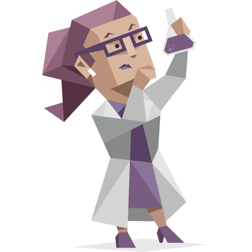

Myers Briggs Type Indicator

16personalities.com, 2022, image
According to the test results, I am a Turbulent Logician (INTP-T) and analyst.
This type represents a socially selective, rational person who is driven by self-improvement.
Logicians tend to get tired out by extensive socializing, they prefer exchanging ideas instead.
They are strong at analysing information and coming up with creating ideas, they often create innovations.
Logicians are driven by curiosity and often get absorbed with a new interest or area of research. On the other hand,
people of this type are often dissatisfied with the current state of things which lead to another weakness: perfectionism.
Logicians are resourceful and focused workers (16personalities.com, 2022).

16personalities.com, 2022, chart
LifeTrain - Learning styles quiz
Learning Preferences
According to Learning styles quiz, my learning style is mostly reflector.
Learning styles quiz, 2022, chart
Reflectors prefer observing the environment and they tend to be cautious.
They tend to collect and analyse information to come to their conclusions, which they may take considerable time and effort to develop.
The recommended study methods for reflectors are paired discussions, demonstrations and feedback from others (Medical University of Vienna, n.d.). (Medical University of Vienna, n.d.).
IPIP Big Five Factor Test
Big 5 Factors
Psychometrics Project test revealed that I am very introverted but very friendly and optimistic.
Openpsychometrics.org, 2022, chart
I scored low on emotional stability, but at the same time I am a highly organised, diligent individual with vivid imagination (Openpsychometrics.org, 2019).
I am a bit sceptical of these tests as they are quite vague and can suit a variety of completely different people.
I believe it is hard to assess a personality through a short website test. In general, the results of all 3 tests were similar, so I think they are relatively accurate.
I can definitely use the results to reflect on my behaviour or use it to adjust my studying techniques. It is also useful to understand how I possibly interact with people.
I agree with the first personality test that my type of personality does not like small talk and chitchat, but generally communicating with other people is inspirational and nourishing to me.
I am agreeable and even though I am deeply introverted, it is not a problem for me to communicate with people easily.
When forming a team, I would not fit into a group with aggressive and disorganised members.
I’m a helpful collaborator and would enjoy working with a team of mind like people.
I agree with the test results that one of my weaknesses can be perfectionism and it might make me work on certain things longer.